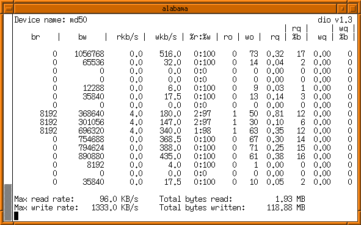
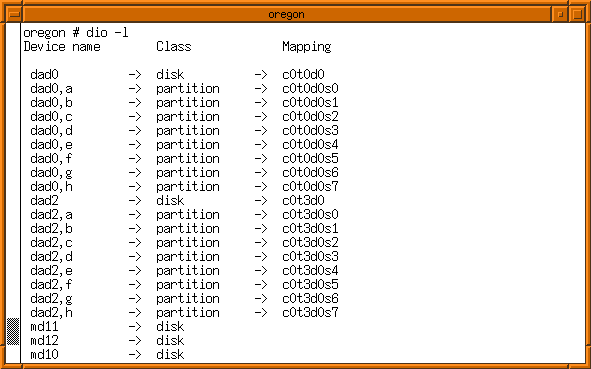

The top 3 lines state the device name being monitored and column headings, the next 20 are a scrolling log of formatted data output which is updated every <time interval> seconds. Then at the foot are maximum and total readings.

This following screenshot is an example of the output from dio -l, which lists all I/O devices that can be used with dio. Device Name is the name of the device as expected by dio. The Class columns shows what kind of I/O device it is. The Mapping column maps the device name to the cXtXdXsX format, where possible.
